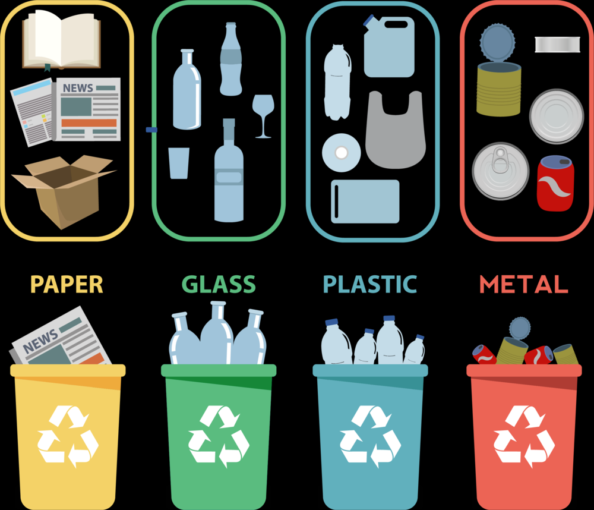

Recyclable Classification

Recyclable
Benefits for recycling see more detail about advantage
It mainly includes five categories of waste paper, plastic, glass, metal and cloth.
Garbage classification mark
Garbage classification mark
Waste paper: mainly includes newspapers, periodicals, books, various wrapping papers, etc. However, it should be noted that paper towels and toilet paper are too strong to be recycled due to their water solubility.
Plastic: various plastic bags, plastic foam, plastic packaging, disposable plastic lunch box cutlery, hard plastic, plastic toothbrush, plastic cup, mineral water bottle, etc.
Glass: mainly includes various glass bottles, broken glass pieces, mirrors, thermoses, etc.
Metals: mainly including cans, cans, etc.
Fabric: mainly includes discarded clothes, tablecloths, face towels, school bags, shoes, etc.